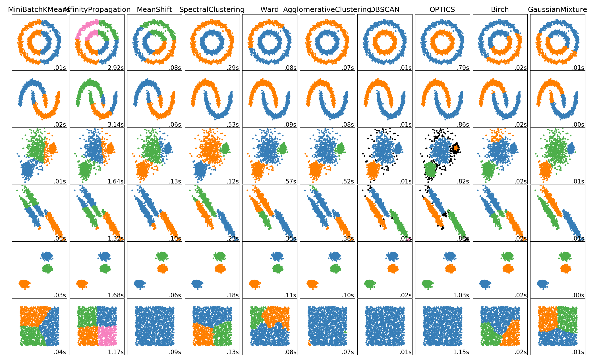

Note
Click here to download the full example code or run this example in your browser via Binder
1.6.28. Comparing different clustering algorithms on toy datasets¶
This example shows characteristics of different clustering algorithms on datasets that are “interesting” but still in 2D. With the exception of the last dataset, the parameters of each of these dataset-algorithm pairs has been tuned to produce good clustering results. Some algorithms are more sensitive to parameter values than others.
The last dataset is an example of a ‘null’ situation for clustering: the data is homogeneous, and there is no good clustering. For this example, the null dataset uses the same parameters as the dataset in the row above it, which represents a mismatch in the parameter values and the data structure.
While these examples give some intuition about the algorithms, this intuition might not apply to very high dimensional data.
print(__doc__)
import time
import warnings
import numpy as np
import matplotlib.pyplot as plt
from sklearn import cluster, datasets, mixture
from sklearn.neighbors import kneighbors_graph
from sklearn.preprocessing import StandardScaler
from itertools import cycle, islice
np.random.seed(0)
# ============
# Generate datasets. We choose the size big enough to see the scalability
# of the algorithms, but not too big to avoid too long running times
# ============
n_samples = 1500
noisy_circles = datasets.make_circles(n_samples=n_samples, factor=.5,
noise=.05)
noisy_moons = datasets.make_moons(n_samples=n_samples, noise=.05)
blobs = datasets.make_blobs(n_samples=n_samples, random_state=8)
no_structure = np.random.rand(n_samples, 2), None
# Anisotropicly distributed data
random_state = 170
X, y = datasets.make_blobs(n_samples=n_samples, random_state=random_state)
transformation = [[0.6, -0.6], [-0.4, 0.8]]
X_aniso = np.dot(X, transformation)
aniso = (X_aniso, y)
# blobs with varied variances
varied = datasets.make_blobs(n_samples=n_samples,
cluster_std=[1.0, 2.5, 0.5],
random_state=random_state)
# ============
# Set up cluster parameters
# ============
plt.figure(figsize=(9 * 2 + 3, 12.5))
plt.subplots_adjust(left=.02, right=.98, bottom=.001, top=.96, wspace=.05,
hspace=.01)
plot_num = 1
default_base = {'quantile': .3,
'eps': .3,
'damping': .9,
'preference': -200,
'n_neighbors': 10,
'n_clusters': 3,
'min_samples': 20,
'xi': 0.05,
'min_cluster_size': 0.1}
datasets = [
(noisy_circles, {'damping': .77, 'preference': -240,
'quantile': .2, 'n_clusters': 2,
'min_samples': 20, 'xi': 0.25}),
(noisy_moons, {'damping': .75, 'preference': -220, 'n_clusters': 2}),
(varied, {'eps': .18, 'n_neighbors': 2,
'min_samples': 5, 'xi': 0.035, 'min_cluster_size': .2}),
(aniso, {'eps': .15, 'n_neighbors': 2,
'min_samples': 20, 'xi': 0.1, 'min_cluster_size': .2}),
(blobs, {}),
(no_structure, {})]
for i_dataset, (dataset, algo_params) in enumerate(datasets):
# update parameters with dataset-specific values
params = default_base.copy()
params.update(algo_params)
X, y = dataset
# normalize dataset for easier parameter selection
X = StandardScaler().fit_transform(X)
# estimate bandwidth for mean shift
bandwidth = cluster.estimate_bandwidth(X, quantile=params['quantile'])
# connectivity matrix for structured Ward
connectivity = kneighbors_graph(
X, n_neighbors=params['n_neighbors'], include_self=False)
# make connectivity symmetric
connectivity = 0.5 * (connectivity + connectivity.T)
# ============
# Create cluster objects
# ============
ms = cluster.MeanShift(bandwidth=bandwidth, bin_seeding=True)
two_means = cluster.MiniBatchKMeans(n_clusters=params['n_clusters'])
ward = cluster.AgglomerativeClustering(
n_clusters=params['n_clusters'], linkage='ward',
connectivity=connectivity)
spectral = cluster.SpectralClustering(
n_clusters=params['n_clusters'], eigen_solver='arpack',
affinity="nearest_neighbors")
dbscan = cluster.DBSCAN(eps=params['eps'])
optics = cluster.OPTICS(min_samples=params['min_samples'],
xi=params['xi'],
min_cluster_size=params['min_cluster_size'])
affinity_propagation = cluster.AffinityPropagation(
damping=params['damping'], preference=params['preference'])
average_linkage = cluster.AgglomerativeClustering(
linkage="average", affinity="cityblock",
n_clusters=params['n_clusters'], connectivity=connectivity)
birch = cluster.Birch(n_clusters=params['n_clusters'])
gmm = mixture.GaussianMixture(
n_components=params['n_clusters'], covariance_type='full')
clustering_algorithms = (
('MiniBatchKMeans', two_means),
('AffinityPropagation', affinity_propagation),
('MeanShift', ms),
('SpectralClustering', spectral),
('Ward', ward),
('AgglomerativeClustering', average_linkage),
('DBSCAN', dbscan),
('OPTICS', optics),
('Birch', birch),
('GaussianMixture', gmm)
)
for name, algorithm in clustering_algorithms:
t0 = time.time()
# catch warnings related to kneighbors_graph
with warnings.catch_warnings():
warnings.filterwarnings(
"ignore",
message="the number of connected components of the " +
"connectivity matrix is [0-9]{1,2}" +
" > 1. Completing it to avoid stopping the tree early.",
category=UserWarning)
warnings.filterwarnings(
"ignore",
message="Graph is not fully connected, spectral embedding" +
" may not work as expected.",
category=UserWarning)
algorithm.fit(X)
t1 = time.time()
if hasattr(algorithm, 'labels_'):
y_pred = algorithm.labels_.astype(np.int)
else:
y_pred = algorithm.predict(X)
plt.subplot(len(datasets), len(clustering_algorithms), plot_num)
if i_dataset == 0:
plt.title(name, size=18)
colors = np.array(list(islice(cycle(['#377eb8', '#ff7f00', '#4daf4a',
'#f781bf', '#a65628', '#984ea3',
'#999999', '#e41a1c', '#dede00']),
int(max(y_pred) + 1))))
# add black color for outliers (if any)
colors = np.append(colors, ["#000000"])
plt.scatter(X[:, 0], X[:, 1], s=10, color=colors[y_pred])
plt.xlim(-2.5, 2.5)
plt.ylim(-2.5, 2.5)
plt.xticks(())
plt.yticks(())
plt.text(.99, .01, ('%.2fs' % (t1 - t0)).lstrip('0'),
transform=plt.gca().transAxes, size=15,
horizontalalignment='right')
plot_num += 1
plt.show()
Total running time of the script: ( 0 minutes 22.886 seconds)